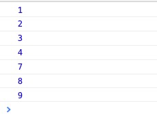
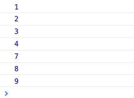
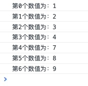
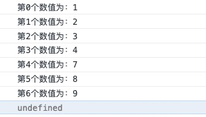
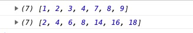
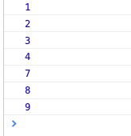
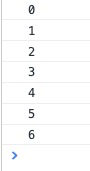
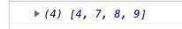
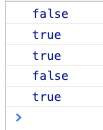
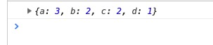

在网上找了很久，没有很全面的，总是缺几个，索性自己查一查资料总结一下子
不过多解释，大家都懂
实例：
<script>
var arr = [1, 2, 3, 4, 7, 8, 9]
for (let i = 0;i < arr.length;i++) {
console.log(arr[i]);
}
</script>输出效果：

for循环优化 ：让arr.length只获取一次，不重复获取。
<script>
var arr = [1, 2, 3, 4, 7, 8, 9]
for (let i = 0,len = arr.length;i < len;i++) {
console.log(arr[i]);
}
</script>由数组继承的Array对象的原型方法，在参数中可添加回调函数，回调函数可添加一个或多个参数。
参数包括：
currentValue
数组中正在处理的当前元素。
index可选
数组中正在处理的当前元素的索引。
array可选
forEach() 方法正在操作的数组。
实例：
<script>
var arr = [1, 2, 3, 4, 7, 8, 9]
arr.forEach(currentValue => {
console.log(currentValue);
});
</script>输出：

一般工作中都只加前面两个参数，就是当前值和索引两个参数
实例：
<script>
var arr = [1, 2, 3, 4, 7, 8, 9]
arr.forEach((element, index) => {
console.log('第' + index + '个数值为：' + element);
});
</script>输出

注意点：
forEach不会改变数组本身的值，因为他每次回调函数返回的都是undefined，而且他不能被链式调用，但是不排除在回调函数里改变数组本身的值。最明显的例子就是forEach不能像是Map一样return改变数组本身的值。
实例：
<script>
var arr = [1, 2, 3, 4, 7, 8, 9]
var arr2 = arr.forEach((element, index) => {
console.log('第' + index + '个数值为：' + element);
return element * 2;
});
console.log(arr2);
</script>输出：

另外一个注意点：
就是forEach一旦开始无法使用return或者break来终止循环或者跳出循环。
这个就不上例子了，很好理解。
由数组继承的Array对象的原型方法，在参数中可添加回调函数，回调函数可添加一个或多个参数。
参数包括：
currentValue
数组中正在处理的当前元素。
index可选
数组中正在处理的当前元素的索引。
array可选
forEach() 方法正在操作的数组。
和forEach最大的区别就是map可以通过return可以改变输出值，但是不改变原数组值，而非单纯的遍历
实例：
<script>
var arr = [1, 2, 3, 4, 7, 8, 9];
const arr2 = arr.map(element => element * 2);
console.log(arr);
console.log(arr2);
</script>输出：

for-of可以迭代很多东西，包括包括 [Array]，[Map]，[Set]，[String]，[TypedArray]对象等等。在这里只解释一下在数组中的迭代。
for (variable of iterable) {
//statements
}variable是在每次迭代中，将不同属性的值分配给变量。
iterable是被迭代枚举其属性的对象。
实例：
<script>
var arr = [1, 2, 3, 4, 7, 8, 9];
for (value of arr) {
console.log(value);
}
</script>输出：

与forEach的不同点就是支持return break和continue等操作。
For-in 在数组遍历的时候与for -of不同的是他遍历枚举属性，而像数组的值不是可枚举属性。可以说for-in不是合适的遍历数组的方法。
举个简单的例子，这篇就不涉及for-in和for-of的更详细的内容了，只需要知道for-in是遍历枚举属性的方法，他不适合遍历数组就OK了。
for-in 和 for-of和枚举属性等概念在这里：https://www.cnblogs.com/wangzirui98/p/11227853.html
实例：
<script>
var arr = [1, 2, 3, 4, 7, 8, 9];
for (value in arr) {
console.log(value);
}
</script>输出：

所以输出的都是枚举属性，不会输出具体的值。
准确的说find不是遍历数组的，而是寻找数组中的具体的值的作返回的一个方法。他和findIndex非常相像，findIndex是返回具体的索引的。
他是由数组继承的Array对象的原型方法，所以直接在数组上调用，他的方法体内需要一个回调函数，在数组每一项上执行的函数，接收 3 个参数：
element
当前遍历到的元素。
index可选
当前遍历到的索引。
array可选
数组本身。
他的返回值可以是具体的值，或者undefined(没有找到符合要求的元素)
实例：
<script>
var arr = [1, 2, 3, 4, 7, 8, 9];
const res = arr.find(element => element > 3)
console.log(res);
</script>输出：4
所以说他不会返回具体一个数组，而是返回下一个的值。
findIndex同理：
<script>
var arr = [1, 2, 3, 4, 7, 8, 9];
const res = arr.findIndex(element => element > 3)
console.log(res);
</script>输出：3（PS：因为元素4在索引3上。这里的3不是指3这个值）
这个准确的说也不是用来遍历的，顾名思义，它是用来筛选数组的。同样，它里面放一个回调函数，函数里面放三个参数
element
数组中当前正在处理的元素。
index可选
正在处理的元素在数组中的索引。
array可选
调用了 filter 的数组本身。
实例：
<script>
var arr = [1, 2, 3, 4, 7, 8, 9];
const res = arr.filter(element => element > 3)
console.log(res);
</script>输出：

需要强调的是filter是通过回调函数返回的true或者false来返回不同的值来组成数组的。而且他不会改变原有的数组。
some和every遍历数组的每个值然后返回一个布尔值。如果每个值运行回调函数都返回true或者都返回false，every会返回true或者false；如果有一个返回true，some会返回true，如果所有返回false则some会返回false。它们里面放的这个回调函数里面可以放三个参数：
element
数组中当前正在处理的元素。
index可选
正在处理的元素在数组中的索引。
array可选
调用了 filter 的数组本身。
实例：
<script>
var arr = [1, 2, 3, 4, 7, 8, 9];
let res = arr.some(element => element > 10)
console.log(res);
res = arr.some(element => element > 8)
console.log(res);
res = arr.some(element => element < 10)
console.log(res);
res = arr.every(element => element > 3)
console.log(res);
res = arr.every(element => element > 0)
console.log(res);
</script>输出：

reduce()方法接收一个函数作为累加器(accumulator),数组中的每个值(从左到右)开始合并,最终为一个值.
回调函数执行数组中每个值的函数(也可以叫做reducer),包含4个参数.
previousValue
上一次调用回调返回的值,或者是提供的初始值(initialValue)
currentValue
数组中当前被处理的元素
index
当前元素在数组中的索引
array
调用reduce的数组
实例：
<script>
var arrString = 'abcdaabc'
// 获取字符中中每个字母出现的次数
let count = arrString.split('').reduce(function (res, cur) {
res[cur] ? res[cur]++ : res[cur] = 1
return res
}, {})
console.log(count)
</script>输出：

仅是自己总结，要了解全面的话还是需要去查文档，推荐MDN上仔细阅读文档：https://developer.mozilla.org/zh-CN/docs/Web/JavaScript/Reference/Global_Objects/Array